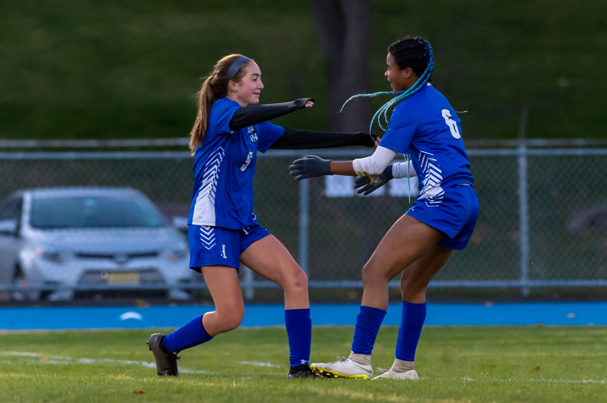

Behind The Scenes!
The goal of our program is to build a student athletes mentallity!
The goals we focus on...
- Provide coping methods
Giving athletes Problem-Focused Coping methods and Emotion-Focused Coping methods
will allow student athletes to perform their best on and off the field. Athletes need social support
like us, their teammates, friends, and coaches/parents. Managing these little to major problems can
impact athletes from all around greatly.
- Motivation for the drive to push pass stress
In order to conquer these mental blocks, student-athletes would have to take action!
Mental shortcuts are caused my lazy thinking. I'll be certain to stay engage in what student-athletes say, find
their passion towards something, and use it as a drive/tool to reach success.
- Finding new paths to build a bright future
During a student-athlete's everyday routine, they might not see negative traits being applied
in their schedules. Our goal is to pull the stress out student-athlete minds, not keep it weighted in their heads.
Making stressors belong in the past, creating positive present events, and building a strong
future mind!
Giving athletes Problem-Focused Coping methods and Emotion-Focused Coping methods will allow student athletes to perform their best on and off the field. Athletes need social support like us, their teammates, friends, and coaches/parents. Managing these little to major problems can impact athletes from all around greatly.
In order to conquer these mental blocks, student-athletes would have to take action! Mental shortcuts are caused my lazy thinking. I'll be certain to stay engage in what student-athletes say, find their passion towards something, and use it as a drive/tool to reach success.
During a student-athlete's everyday routine, they might not see negative traits being applied in their schedules. Our goal is to pull the stress out student-athlete minds, not keep it weighted in their heads. Making stressors belong in the past, creating positive present events, and building a strong future mind!